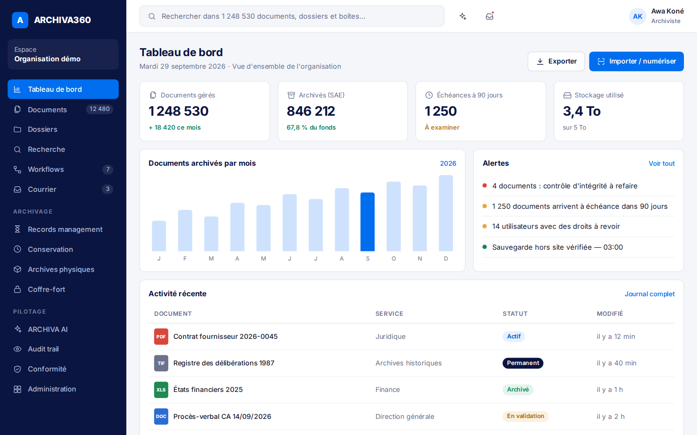
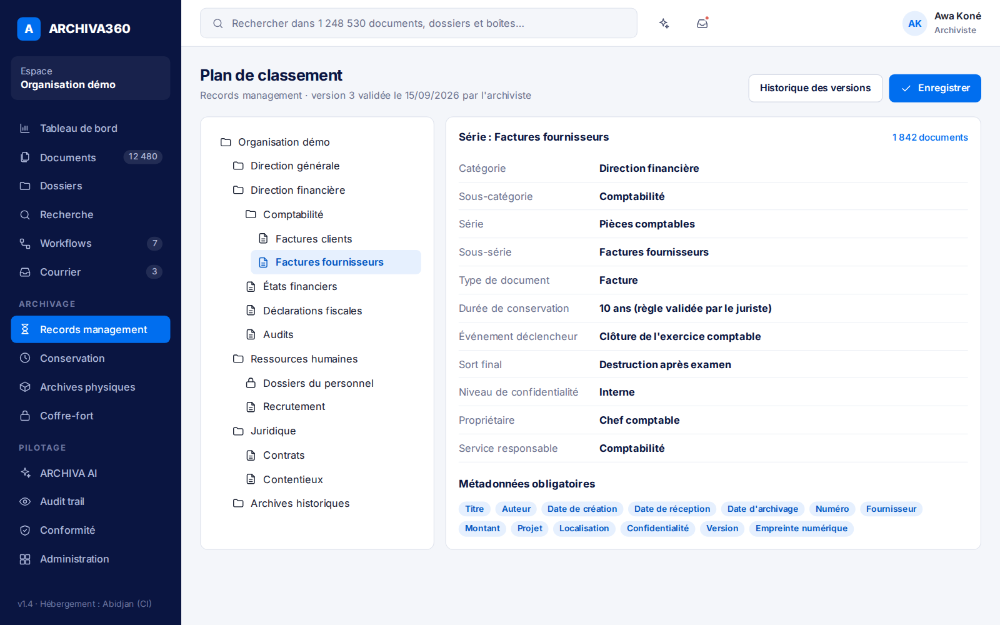
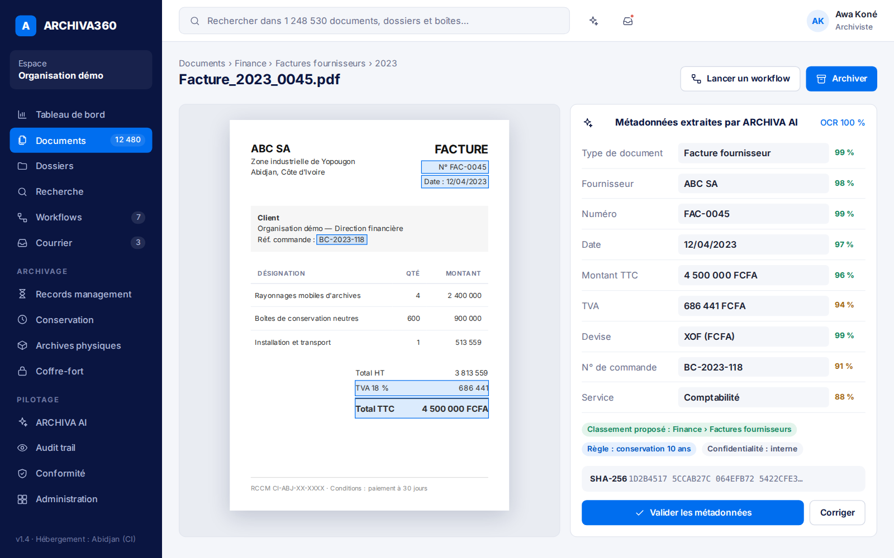
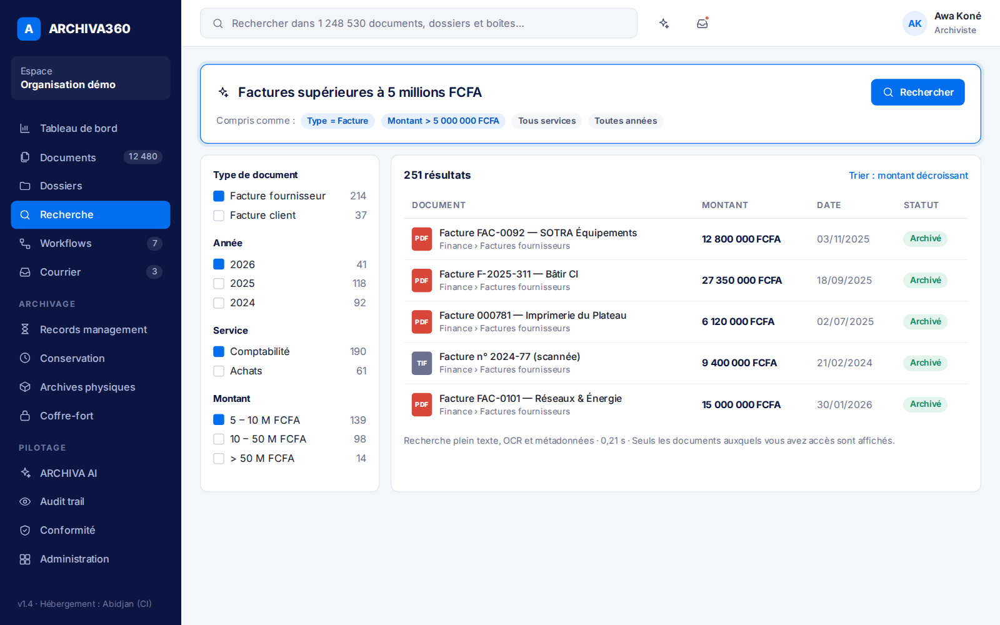
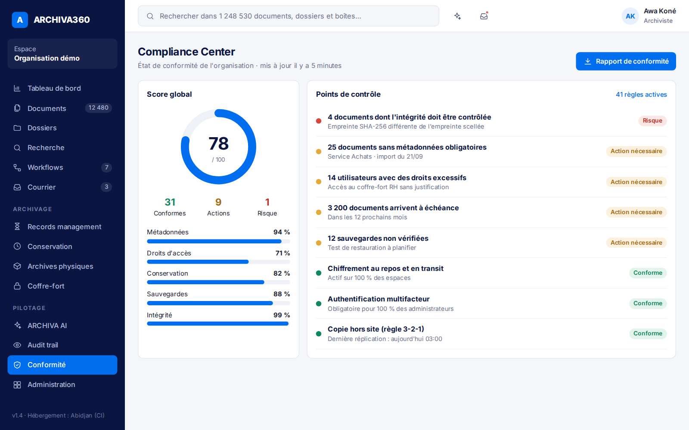
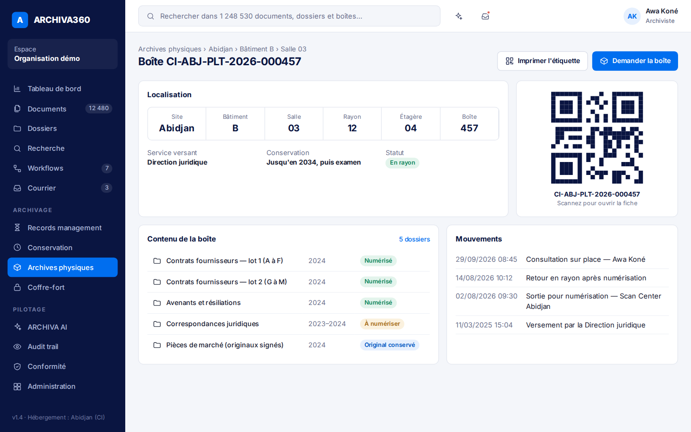

GED, SAE, records management : ne plus confondre
Trois notions souvent mélangées, trois besoins différents. Comprendre la différence évite d'acheter le mauvais outil.
La plateforme africaine de gestion, d'archivage et de préservation documentaire. ADA transforme vos archives papier et numériques en un patrimoine organisé, sécurisé et durable.
Hébergement en Côte d'Ivoire, en cloud privé ou dans vos locaux.

Une démarche fondée sur les références reconnues
La plupart des organisations accumulent des tonnes de dossiers papier, des fichiers dispersés et des documents introuvables. Personne ne sait combien de temps les garder, ni qui peut les consulter.
Au lieu de juxtaposer un scanner, un logiciel et un hébergeur, ADA prend en charge chaque étape de la vie de vos documents.
Nous ne vendons pas qu'un logiciel. Nous associons conseil archivistique, numérisation, technologie et préservation de confiance.

Audit documentaire, plan de classement, politique d'archivage et conformité. Nos archivistes et juristes posent les règles avant de choisir l'outil.

Notre centre de numérisation d'Abidjan prend en charge vos fonds : préparation, scan, OCR, indexation, contrôle qualité et import dans ARCHIVA360.

GED, archivage électronique, records management, archives physiques et IA documentaire dans un seul outil, en SaaS ou sur site.

Coffre-fort numérique, empreinte et horodatage, sauvegarde 3-2-1, plan de reprise et préservation des formats selon le modèle OAIS.
Un seul outil pensé pour les réalités africaines : archives physiques et numériques, plusieurs pays, français et anglais, cloud ou sur site.
Scanner, importer, lire et extraire les données.
« Factures supérieures à 5 millions FCFA ».
Règles de conservation et échéances automatiques.
Boîtes localisées et QR codes.

Une règle non négociable : l'IA assiste, elle ne décide pas. Destruction, classement définitif et droits d'accès sont toujours validés par une personne habilitée, avec traçabilité.
Administrations, banques, assurances, hôpitaux, universités, industries : chaque secteur a ses documents et ses obligations.
Pas de grand projet à l'aveugle. Nous commençons par un audit et un fonds pilote pour que vous jugiez sur pièces.
« Nous analysons 10 000 dossiers de votre organisation, vous proposons un plan de classement et numérisons un fonds pilote de 1 000 dossiers. »
Notre offre de démarrage : Audit + digitalisation pilote
Répondez à 20 questions et obtenez un premier score de maturité documentaire, avec trois priorités d'action.
Faire le test gratuitUn premier échange gratuit pour comprendre vos fonds et vos contraintes.
Volumes, lieux de stockage, accès, risques et sauvegardes.
Plan de classement et règles de conservation, définis avec un archiviste et un juriste.
Numérisation, OCR et indexation d'un premier fonds.
Vos propres documents, retrouvés en quelques secondes.
Mise en service, formation des équipes et accompagnement.
Un même cœur logiciel, adapté à chaque pays : règles, métadonnées, durées, langues et hébergement se configurent par pays.
Abidjan, premier centre de numérisation
Sénégal, Bénin, Togo, Burkina Faso
Cameroun, RDC, Gabon, Congo
Ghana, Kenya, Nigeria
Trois notions souvent mélangées, trois besoins différents. Comprendre la différence évite d'acheter le mauvais outil.
Trois copies, deux supports, une copie hors site : une règle simple qui sauve des décennies d'archives.
Transactions électroniques, signature, archivage, données personnelles, sécurité des systèmes : les repères du cadre ivoirien.
Les questions que nous posent le plus souvent les directions générales, les DSI et les archivistes.
Les deux. ADA commence comme une société de transformation documentaire (conseil, numérisation, migration) et édite la plateforme ARCHIVA360. Vous pouvez faire appel à nos services, à la plateforme, ou aux deux.
Vous choisissez : hébergement par ADA, cloud privé, installation dans vos locaux ou architecture hybride. Pour les administrations, nous privilégions la souveraineté des données.
Cela dépend des volumes, du nombre d'utilisateurs et du niveau de sécurité. Les abonnements démarrent à partir de 25 000 FCFA par mois ; la numérisation est facturée à la page ou au projet. Un audit permet de chiffrer précisément.
Non. L'audit identifie les fonds prioritaires : les documents les plus consultés, les plus précieux ou les plus menacés. Les autres peuvent rester sur papier, inventoriés et localisés grâce aux QR codes.
ARCHIVA360 est conçue à partir du cadre ivoirien (transactions électroniques, archivage électronique, protection des données) et des normes internationales. Nous faisons valider chaque dispositif par un juriste et ne revendiquons aucune conformité sans validation indépendante.